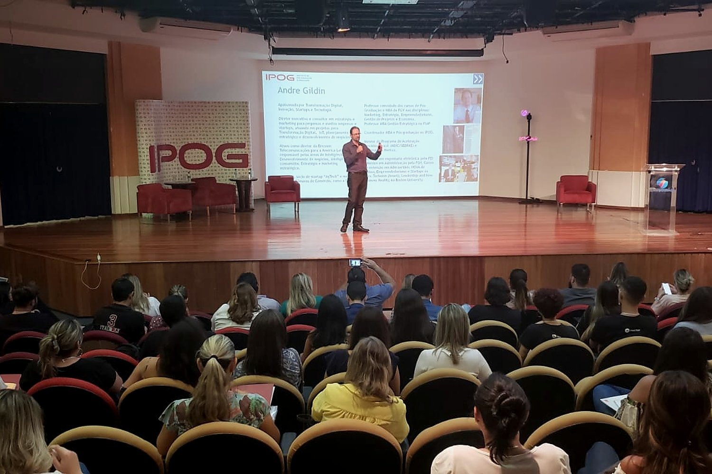

01 · Liderança
Além do prompt: liderança na era dos agentes de IA
A maioria dos projetos de IA não gera retorno, e o problema não é a tecnologia. Como liderar com estratégia e cultura, indo além das ferramentas.
Para quem: líderes, gestores e RH.
Palestras transformadoras · IA · Inovação · Agro
Andre Gildin traduz Inteligência Artificial e inovação em conteúdos claros, práticos e aplicáveis, para que líderes e equipes transformem estratégia em valor.
Agenda aberta para 2027 · presencial e online · PT, EN, ES

+100
palestras e treinamentos no Brasil e no exterior
Cocriador do IA Canvas
da estratégia ao ROI em projetos de IA
Ex-diretor Ericsson e Nokia
áreas comercial e de estratégia
VP de Estratégia da Abria
Associação Brasileira de Inteligência Artificial
Palcos, escolas e veículos
World Marketing Summit · Kotler Impact · Front End Innovation Boston · FGV · IPOG · StartSe · Board Academy
Citado em Valor · O Globo · Extra · CBN · BandNews · Record News Rural

“Humanos e agentes de IA vão dividir a mesma estrutura. A IA não vai substituir líderes, vai valorizar os que transformam estratégia em valor.”
Você e sua empresa estão preparados?

Quem é Andre Gildin
Palestrante com mais de 100 palestras realizadas no Brasil e palestrante internacional no World Marketing Summit, Kotler Impact e Front End Innovation, em Boston. É frequentemente citado em mídias especializadas como Valor, O Globo, Extra e CBN.
Fundador da RKKG Consulting, consultoria em inovação e transformação, advisor de startup de agro e VP de Estratégia da Abria. Foi diretor comercial e de estratégia da Ericsson e da Nokia.
Coordenador e professor dos MBAs do IPOG em Inteligência Artificial para Negócios, Gestão do Agronegócio e Marketing. Professor convidado na FGV, StartSe e Board Academy.
Mestre em Administração pela FGV, engenheiro pela FEI, com formação em gestão, inovação e liderança no Brasil e no exterior: Boston University (EUA), Technion (Israel) e NOVA de Lisboa (Portugal).
Principais palestras e temas
Conteúdos customizados para o seu público, com versões para Liderança, Vendas e RH.
01 · Liderança
A maioria dos projetos de IA não gera retorno, e o problema não é a tecnologia. Como liderar com estratégia e cultura, indo além das ferramentas.
Para quem: líderes, gestores e RH.
02 · Abertura de convenções
Agentes, IA física e novos modelos de trabalho: o que já está mudando nos negócios e como se preparar.
Para quem: aberturas de convenção e públicos amplos.
03 · Estratégia
Do problema à solução com o método IA Canvas: como estruturar projetos de IA que geram valor real.
Para quem: C-level, gestores e equipes de projeto.
04 · Inovação
Inovação como estratégia de crescimento, com cultura de experimentação e a IA como aceleradora.
Para quem: empresários, C-level e líderes de inovação.
05 · Pensamento crítico
Como usar a IA para ampliar, e não substituir, o raciocínio, o julgamento e a criatividade de líderes e equipes.
Para quem: líderes, equipes e públicos amplos.
Trilha Agro
Tendências, inovação e tecnologias no agronegócio, customizado para dentro e fora da porteira: produtor, revenda, indústria, instituição financeira e cooperativa.
Imersão em IA para líderes e equipes
Conceitos e ferramentas na prática.
Planejamento estratégico com IA
Mercado, tendências e cenários.
Inovação na prática
Metodologia e ferramentas.
Formatos: presencial e online · Idiomas: português, inglês e espanhol
Em palco


Metodologia proprietária
Metodologia que conecta a estratégia da organização às suas dores reais e as transforma em soluções de IA viáveis, mensuráveis e seguras. Aplicada em empresas e no agronegócio.
“Projetos de IA raramente fracassam por falta de tecnologia. Fracassam por falta de clareza.”
IA Canvas: metodologia desenvolvida por Andre Gildin e Philipe Moura para estruturação de projetos e soluções de IA.
Experiência e diferenciais
Carreira executiva em multinacionais de tecnologia, Ericsson e Nokia, à frente de áreas comerciais e de estratégia na América Latina.
Traduz IA e inovação em conteúdos claros e práticos, com histórias de acertos e erros que provocam reflexão.
O IA Canvas leva o público da inspiração à ação, com um caminho estruturado até o ROI.
VP da Abria, advisor de agtech e coordenador de MBAs: conexão direta com o que está acontecendo agora.
Clientes atendidos
Empresas, cooperativas, instituições de ensino e entidades que já contaram com palestras, treinamentos e projetos de consultoria. Passe o mouse sobre os logos para pausar.


Para o seu evento
Abertura de impacto para equipes de vendas e lideranças, conectando IA ao desafio do ano.
Comece o ciclo alinhando o time sobre tendências, oportunidades e o papel de cada um na era da IA.
Palestra e workshop facilitado para traduzir cenários e IA em prioridades e projetos concretos.
Agenda aberta para 2027
Garanta a data da sua convenção, kick-off ou encontro estratégico. Presencial em todo o Brasil e no exterior, ou online.
Na mídia
Entrevistas e análises em grandes veículos sobre IA, telecom, regulação e agro.
RKKG Consulting
Andre é fundador da RKKG Consulting, consultoria de negócios e inovação com forte atuação no agronegócio. A missão: melhorar o posicionamento e o desempenho dos clientes na transformação digital, com consultores e parceiros especializados em cada elo da cadeia.
Realize · Knowledge² · Growth
Conheça a RKKGTransformação digital e Agro 4.0, IA e IoT, planejamento estratégico, interação com startups e inteligência de mercado.
Palestras, workshops e treinamentos para alta gestão, líderes e colaboradores.
Clientes e parceiros incluem Cocamar, TikTok, MDS Group, American Tower, Focus Têxtil e Santa Vitória.
Contrate
Conte sobre o seu público e o objetivo do encontro. A resposta vem com proposta de tema e formato.
Falar no WhatsApp+55 11 98122-8612
andre.gildin@rkkgconsulting.com
LinkedIn · Instagram